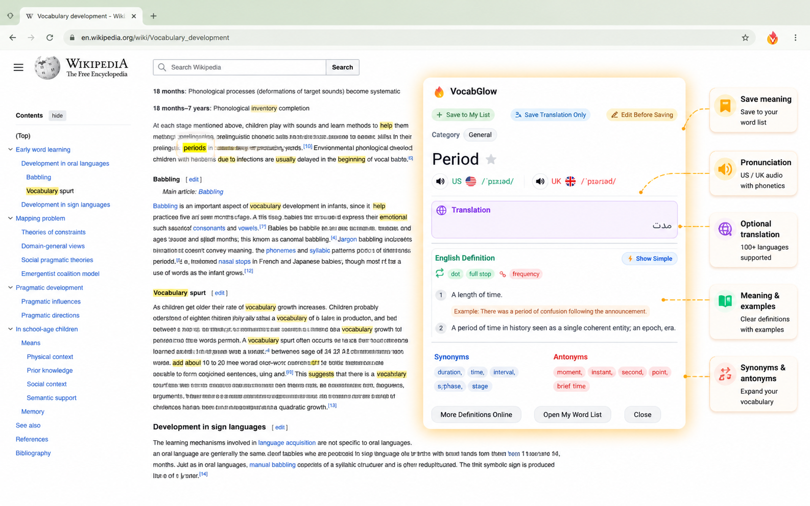
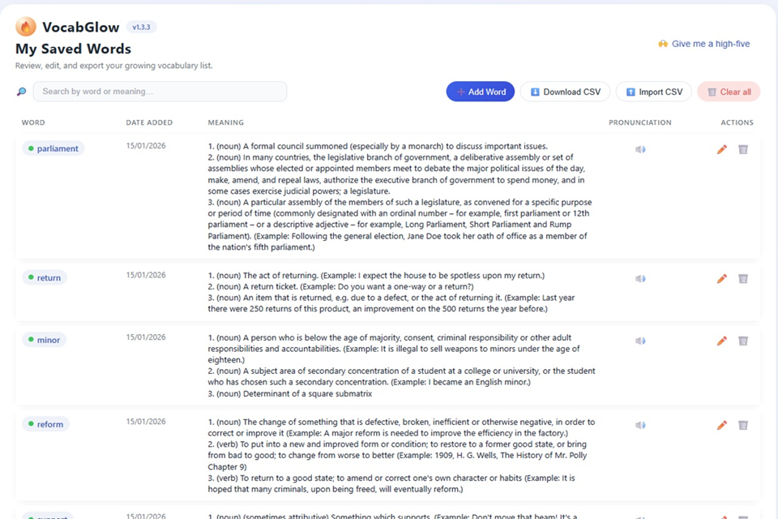
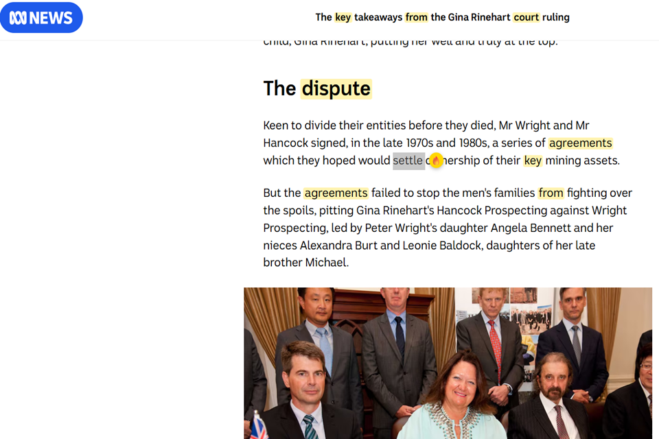

Instant word lookup
Look up unfamiliar words quickly while staying on the page you are already reading. This keeps momentum high and reduces the need to switch tabs or open separate tools.

Features
Each feature is designed to stay useful during normal browsing instead of forcing a separate study workflow.
Look up unfamiliar words quickly while staying on the page you are already reading. This keeps momentum high and reduces the need to switch tabs or open separate tools.

Use translation as an extra layer of support when a direct meaning helps you understand context faster. It is useful for learners who want quick clarity without extra effort.
Save useful words into your own list so they stay organised and easy to revisit. This helps turn interesting discoveries into a personal system instead of a forgotten moment.

Bring saved vocabulary back into view by highlighting words you already collected. This can make repeat exposure feel more natural while reading articles, study material, or work content.

Use lightweight reminders to revisit vocabulary you saved earlier. The goal is to support consistency without making review feel heavy or complicated.

Adjust the experience to fit your browsing habits, including highlighting preferences and reminder behaviour, so the extension feels more personal and easier to keep using.